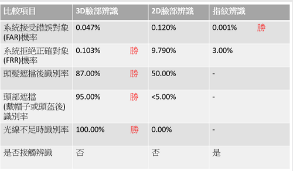

人臉辨識原理與發展

封面圖片來源：Technology photo created by freepik
以下資訊皆是本人參考網路上資訊整理出來的，如有錯誤的地方還請不吝給予指教
目錄
隨著AI、Big Data、網際網路等的快速發展，人臉辨識技術也越來越進步。最常見的人臉辨識就是Apple iphone手機解鎖，除了手機Face ID身分驗證以外，人臉辨識技術在門禁、監控、金融、零售產業的應用範圍也越來越廣
人臉辨識
Face Recognition
人臉辨識是指利用分析比較人臉視覺特徵來進行身份鑑別的技術
廣義的人臉辨識，包括人臉圖像採集、人臉定位、人臉識別預處理、身份確認以及身份查找等；而狹義的人臉辨識是指通過人臉進行身份確認或者身份查找的技術或系統
就生物辨識(人臉、指紋、掌紋、虹膜、語音等)而言，辨識的準確率是連動各項應用的先決條件。生物辨識的優勢在於獨一無二的個人特徵，相對於傳統的密碼或卡片，生物辨識有較強的資安
而人臉辨識在現今的市場也越來越普及，除了辨識度與速度大幅進步，因應Covid-19的影響，也越來越多企業開始投入口罩辨識技術
除了常見的門禁打卡、金融業ATM的身分辨識等，現在許多零售業也開始使用人臉辨識技術。人臉辨識分析客群、VIP到店通知、停留時間、以及結合POS機整合顧客購買紀錄等
回到目錄
人臉辨識原理與技術
人臉辨識的步驟大致可分為：人臉偵測、人臉校正以及人臉特徵值的摘取。
首先，從照片中尋找出是否有人臉存在，當發現之後，就會對此人臉進行預處理。
圖片來源: 網管人
人臉偵測(face detection)→特徵截取(feature extraction)→人臉辨識(face recognition)
系統輸入一張或者一系列含有未確定身份的人臉圖像，以及人臉資料庫中的若干已知身份的人臉圖象或者相應的編碼，而其輸出則是一系列相似度得分，表明待識別的人臉的身份
早期的人臉辨識多以2D圖像為主，但2D辨識較容易受到光線和角度影響，且會有照片盜用的可能
現今使用3D人臉辨識，以3D感測技術擷取人臉的立體特徵，建立3D模型
以Apple Face ID為例：
-
由點陣投影器（Dot Projector）投影三萬個紅外線光點到臉上
-
利用光點反射回紅外線相機（Infrared Camera）的距離，來紀錄和回傳使用者的臉部特徵
-
藉由泛光感應元件（Flood Illuminator）來避免在過亮或是過暗的環境下使用所造成的誤判。
-
將感應到的3D人臉資料與存在晶片中的資料進行比對確認後，即可順利登入。
以下為2D與3D人臉辨識的比較：
2D人臉辨識架構：
一般攝影機→獲取圖像數據→人臉偵測→特徵截取→人臉辨識
3D人臉辨識架構：
攝影機(3D結構光/TOF/雙目立體視覺)→獲取圖像數據→配準→3D人臉重建→人臉偵測→特徵截取→人臉辨識
圖像配準(Image registration)是將不同時間、不同感測器或不同條件下（天候、照度、攝像位置和角度等）獲取的兩幅或多幅圖像進行匹配、疊加的過程

圖表來源: 交大IR@NCTU簡嘉瑩
就一般的動態辨識而言，以攝影機擷取移動中的人物，可能產生各種角度的影像，使辨識引擎比對資料庫時，無法達到最好的效果。若能將最初登錄於資料庫的照片模擬成3D立體人像，使用者只要提供一張照片，系統軟體就能模擬人臉在各個方向角度所產生的特徵值，這樣一來，即使人員並非以全正面的角度經過攝影機，也能完成辨識
回到目錄
人臉辨識優缺點
人臉辨識系統優勢：
-
非接觸性
相比較門禁卡、指紋或聲音辨識技術而言，人臉識別是非接觸的，用戶不需要和設備直接接觸
-
應用層面廣泛
人臉辨識對個人隱私的強制性較低，更易於導入相關應用，隨處可見的例子就是手機解鎖和機場快速通關
-
辨識率高
兩個人要擁有完全相同臉部特徵幾乎是不可能，因此人臉資料較容易管理
人臉辨識系統隱憂：
-
易變性
人臉的外型其實可以很輕易地就改變，不管是換髮型、戴眼鏡、年齡的增長、易或者是整形，都會影響到辨識結果。而在不同觀察角度，人臉的視覺圖像也有可能會相差很大
-
隱私的侵犯
最近歐美國家越來越重視GDPR(歐盟資料保護法)/(General Data Protection Regulation)，對個資的保護，由於人臉辨識涉及個人隱私，在資安機制不是那麼完善的情況下，並不是所有人都願意使用人臉辨識。
GDPR是在歐盟法律中對所有歐盟個人關於資料保護和隱私的規範，涉及了歐洲境外的個人資料出口。GDPR主要目標為取回個人對於個人資料的控制，以及為了國際商務而簡化在歐盟內的統一規範
回到目錄
人臉辨識發展與應用
目前常見的應用
-
人臉識別門禁考勤系統，人臉識別防盜門
-
電子護照及身份證
-
智慧型手機解鎖手機、識別使用者
-
利用人臉辨識系統輔助信用卡網絡支付，以防止盜刷
-
虛擬人像，將個人照片轉換成AI卡通照片等效果
圖片來源:Inside
目前尚未普及，未來可能會有的發展
-
黑白名單搜尋，利用預先建立臉部模型，找出失蹤人口或是罪犯
-
疲勞駕駛提示系統，主要是辨識駕駛者的臉部表情、眼睛信號、頭部運動性等推斷駕駛員的疲勞狀態
-
情緒偵測，允許商店監控顧客購物時的感受，從而能夠更早地處理發生的問題
回到目錄
市面上各家的臉部辨識系統
NeoFace®
NeoFace®的人臉比對技術不易因表情變化及眼鏡、鬍子等臉部的微變化而受精準度影響，為對應隨時變更的環境條件下，事先登錄各種預測角度，透過嚴密的精算法進行比對作業
NEC臉部辨識技術曾在NIST準確度測試中排名第一，辨識率高達99.78%
FaceMe®
FaceMe®是世界上最準確的人臉辨識技術之一，在全球知名NIST FRVT人臉辨識1:1與1:N測試中名列第一。無論是何種作業系統或硬體配置的IoT/AIoT設備，FaceMe®都可提供高精準度和彈性的人臉辨識技術
GV-AI FR
GV-AI FR 為人臉影像辨識軟體，最多可以同時支援 8 支 IP 攝影機提供人臉辨識功能，並可以與 GV-VMS 影像管理軟體 / GV-ASManager 門禁管理軟體整合，更進一步加強安全管理應用
AI Face Recognition Solution
AI Face Recognition Solution 是一個具有自我學習能力的臉部辨識系統，架構靈活有彈性，不論大小型企業皆可視需求快速導入，優化工作流程
Face8台灣臉霸
標榜台灣市佔率最高的人臉辨識系統
人臉辨識應用系統
標榜台灣自主研發&高整合性
標榜AI邊緣運算推動數位轉型
回到目錄
結語
現在生活中到處都可見人臉辨識的應用，人臉辨識的技術結合了許多產業，大幅提升我們的生活品質。但相對的，許多問題也隨之而來，尤其以隱私權的問題最為嚴重。我們該如何一邊面對資安的議題，一邊讓人臉辨識的市場繼續發展下去，是我們近年來所需要思考的。
回到目錄
資料來源: Face8 / 訊連 / wiki / IBT Magazine / 網管人 / KKnews / 國立交通大學機構典藏系統版權所有 / VMaker / 壹讀